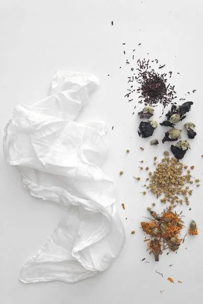
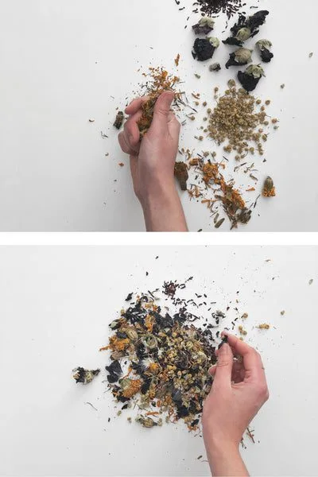
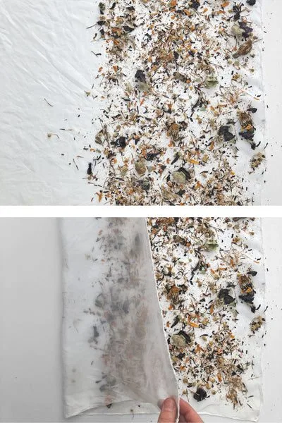
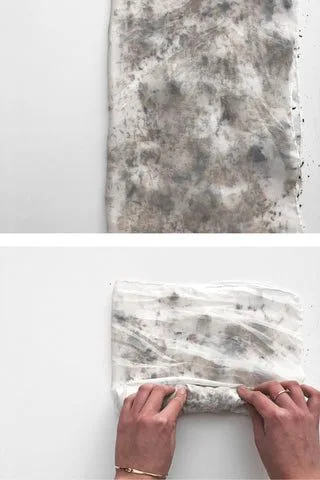
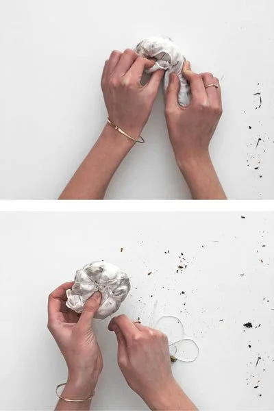
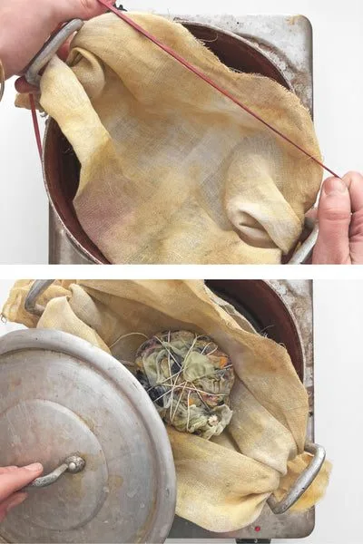
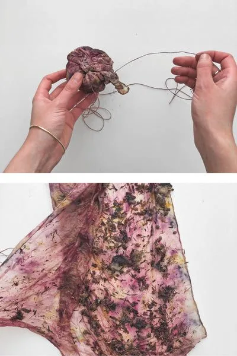
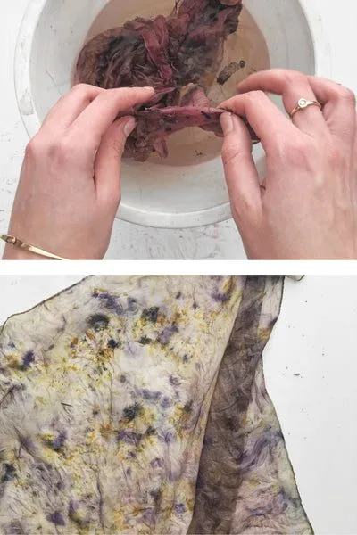
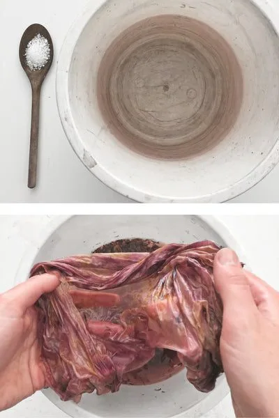
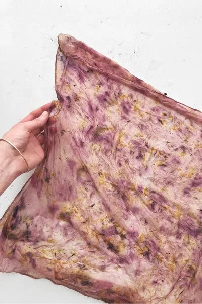

Bundle dyeing is one of the easiest dyeing techniques. It produces a unique pattern every time, as it all depends on the arrangement of the dyestuff. This tutorial doesn't cover mordanting — fixing the color. That step is usually done before dyeing begins, with the use of metal mordants. The silk piece I worked with was first scoured (washed) and then pre-mordanted with aluminum salts. If you are working with materials you have at home, you can skip this step, though colors will be less vibrant and less durable. Don't let it stop you from experimenting, though.
What you need
For this project, you will use a piece of cloth, washed and preferably pre-mordanted. Silk works best, but you can use any kind of natural fabric.
Dried flowers of your choice. For example: hollyhock, hibiscus, chamomile, marigolds.
Two pH modifiers: citric acid for low pH and baking soda for high pH. You can use lemon juice or white vinegar as a citric acid alternative, and washing soda instead of baking soda.
A piece of undyed string.
You will also need a pot, cheesecloth, and a bucket for rinsing.

Collect the flowers
I chose four kinds of dye flowers: black hollyhock, red hibiscus, chamomile, and dyer's marigold. You can test other flowers growing in your area. Remember that not all of them will produce much color.
For this tutorial, I crush the flowers between my fingers and mix them together. You can decide to make bigger and more spaced prints with full flower heads, too. The results will look slightly different.

Arrange the dyestuff
Scatter the flowers on one half of the fabric. Try to cover all the areas, including edges, for the most even coloring.
If you would like to achieve more controlled patterns, try other arrangements (circles, stripes, etc.). Random arrangements work best in my opinion, though.

Fold and roll up
Fold the clear part of the scarf over the flowery arrangement to keep the flowers from moving. It will make bundling easier. Roll up quite tightly, avoiding creases.

Wrap tightly
You can either secure the roll at this point, or roll it again in another direction, making a “snail shell”. Wrap a piece of string around the bundle. Do it tightly, so that the dyestuff can't move inside the bundle and the fabric is touching dyestuff everywhere. Secure with a knot.

Steam for at least an hour
Put a piece of cheesecloth or a loosely woven cloth over the pot and secure with a rubber band, clothes pegs, etc. If you have a steamer or a colander, you can use it instead.
Place a fully wetted bundle on top of the cheesecloth, cover the pot with a lid, and let it steam for 1 to 1.5 hours. Pour some water over the bundle if you notice it's drying. Some pots tend not to keep the steam inside, so make sure you keep the bundle wet. After around half an hour, rotate the bundle — the dye tends to drip down, so it's best to turn it for even coloring.

Cool down and unbundle
Let your bundle cool down, preferably overnight. The longer you wait, the more time the dye has to penetrate the fibers.
If you are impatient like me, go ahead and open it sooner. There will be enough color transferred anyway.

Rinse thoroughly
Remove all the flowers and rinse the scarf. You might notice it has changed color. This is because some dyestuffs you used are pH sensitive. Aluminum mordant is slightly acidic, while water in Berlin is alkaline. Rinsing with it shifts the color.
Make sure there is no dyestuff left on the scarf before you proceed to modifying.

Make it pink or green
Fill a small bucket or a pot with warm water. Dissolve citric acid OR baking soda. Soak the scarf in the solution and see the color change in front of your eyes.
If you want to dye your scarf pink, choose citric acid. If you would like to achieve blue-greens, use baking soda.
Don't rinse your scarf after that. The natural pH of your tap water might change the color back again.

Dry and enjoy
Let the scarf air dry. If you notice any tiny plant matter caught between the fibers, remove it carefully with your fingers. If you want to wash your scarf, hand wash in lukewarm or cold water using a neutral detergent. Make sure it's the same pH as what you used for modifying, either by adding some citric acid (lemon juice, white vinegar) OR baking soda (washing soda).
Green vs. pink
These are the two color options, both made with the same set of flowers. One is green — modified with baking soda. The other is pink — modified with citric acid.
